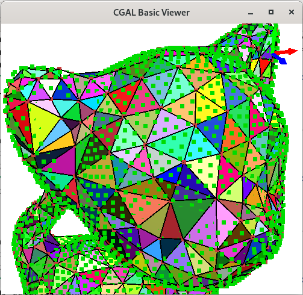

The most simple use case of the basic viewer is the call of the global draw() function. There is one draw function for each CGAL package. Such a call opens a new interactive window showing the given model and allowing to navigate in the scene, show or hide some specific cells, show the interior of the model if any, etc.
The drawing can be tuned using Graphics_scene_options, for example to change the color of some cells or hide some cells.
More complex usage can be achieved by using the Graphics_scene class. Different CGAL data structures can be added in a same Graphics_scene allowing to visualize them simultaneously in a same window. Like for the draw function, the drawing parameters can be tuned thanks to the Graphics_scene_options.
CGAL::Qt::Basic_viewer is a Qt widget that inherits from QGLViewer (libQGLViewer is an open source C++ library based on Qt that eases the creation of OpenGL 3D viewers).
The diagram in Figure 121.1 shows the main classes and functions of this package.
Figure 121.1 UML diagram of the classes and functions of the package (only partial representation).
Basic Usage: The Global Draw Functions
A first simple solution provided to draw the different data structures of CGAL is the global draw() function. This function is templated by the type of the data structure to draw. The following example shows how it can be used.
Users can interact with the viewer using some specific keys or mouse interactions. Pressing key 'h' makes pop up a help window showing the different shortcuts and mouse interactions. The main functionalities of the viewer are:
Versatile Rendering:
The viewer supports the rendering of various geometric elements, such as points, edges, faces, rays, and lines. Different rendering modes, including mono and colored representation, are available for these elements.
Camera Control:
The viewer allows users to move the camera, switch between 2D and 3D viewing modes, adjusting the camera accordingly. Camera settings, such as orthographic or perspective projection, can be configured based on the dimension of the scene.
User Interaction:
Users can interact with the viewer through keyboard inputs, enabling them to control rendering options, toggle the display of elements, and adjust visual parameters. Key presses are mapped to specific actions, such as toggling the clipping plane, changing rendering modes, adjusting the size of elements, and modifying ambient light color.
Clipping Plane:
The viewer includes support for a clipping plane, enabling users to selectively render parts of the scene. The clipping plane can be toggled on and off, and its rendering style can be modified (solid, wireframe, etc.).
Tuning with Graphics Scene Options
There is one specialization of each draw function that takes graphics scene options as additional parameter, allowing to tune the drawing.
The Graphics_scene_options class provides a set of options and customization parameters for rendering geometric structures in a graphics scene. Its main purpose is to allow users to control the visual appearance of various cells such as vertices, edges, faces, and volumes in a graphical representation of a given data structure.
The following example shows how to use graphics scene options to tune the drawing of a surface mesh. We define our own class My_graphics_scene_options that inherits from Graphics_scene_options to get all the default parameters. In this class, we only override the two methods colored_vertex and vertex_color to draw all vertices in color, and chose randomly green or blue colors for one out of two vertices.
The result of this example is shown in Figure 121.4.
Figure 121.4 Example of mesh drawing with a color for each face computed depending on its height.
The Graphics Scene
It is possible to do more advanced visualizations by using the class Graphics_scene. It is a container class for various geometric elements, such as points, segments, rays, lines, faces and texts. It provides several methods to add elements, possibly with individual colors. Things are a little bit different for faces. You must call face_begin() to start a new face (possibly with a color), add all the points in the face by using add_point_in_face(), and call face_end() to finish the face. Note that the given polygonal face is internally triangulated.
This class also stores the normal of the faces (computed automatically), and possibly the normal of the vertices that can be provided by the users.
Users can either fill directly a Graphics_scene using these methods, or by using a global function add_to_graphics_scene() that fills the scene using all the geometric elements of a given CGAL data structure. Like for the draw functions, there is an overload of add_to_graphics_scene() for each CGAL package.
The following example shows in a same viewer both a Point_set_3 and a Polyhedron_3. Note that, like the draw functions, each add_to_graphics_scene() can use an optional Graphics_scene_options as parameter allowing to tune the drawing of the given data structure. In the example, we change the color of all vertices of the point set.
The result of this example is shown in Figure 121.5 where we can see in green the original points of the point cloud, superposed with the polyhedron surface reconstructed by the Poisson surface reconstruction method.

Figure 121.5 Example of drawing of a point cloud and a polyhedron in a same viewer.
The Qt Basic Viewer Class
The class CGAL::Qt::Basic_viewer is a Qt widget that inherits from QGLViewer and mainly stores a Graphics_scene and allows to visualize it and interact with the scene. Since this class is a Qt widget, it can be used into more complex Qt code to create more advanced demos.
In the following example, we create two graphics scenes, one filled with a point cloud, a second one filled with the polyhedral surface reconstructed by the Poisson surface reconstruction method. Then, we create two basic viewers associated with these two scenes. The two basic viewers are added into a Qt layout allowing to visualize the two scenes side by side.
The class Basic_viewer is a Qt widget based on QGLViewer that allows to visualize 3D elements: points...
Definition: Basic_viewer.h:13
The result of this example is shown in Figure 121.6.
Figure 121.6 Example of drawing of two Basic_viewer side by side.
Adding Interaction
In the previous examples, the models are only drawn once and there is no interaction with the user to update the drawing.
It is possible to define such interactions thanks to the class CGAL::Qt::QApplication_and_basic_viewer. In this class, you can define your own function that is called automatically by the viewer when a user presses a key. This can be used to change some parameters and update the drawing accordingly.
We illustrate this possibility in the following example that shows a surface mesh, while coloring the small faces in red. To do so, we use our own graphics scene options than change the color of a face depending on its size. A face is considered small if its size is below a certain threshold. This threshold can be updated by the user, pressing key 'I' to increase it and 'D' to decrease it. This is done in the key pressed function defined in the QApplication_and_basic_viewer. When the threshold changes, the graphics scene is recomputed to take the modification of the size threshold into account.
The class QApplication_and_basic_viewer regroups a Basic_viewer and Qt QApplication.
Definition: Basic_viewer.h:214
The result of this example is shown in Figure 121.7, showing to the left the initial drawing of the 3D model, and to the right the same model after having changed the size threshold.
Figure 121.7 Two examples of drawing of a mesh with small faces in red. Left: With the initial threshold. Right: After having increased the threshold.
Design and Implementation History
This package was started by Mostafa Ashraf during his 2022 GSoC project. Guillaume Damiand, who mentored the project, reworked large parts of the package, wrote examples and the manual.